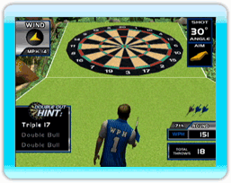
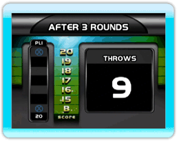

12 |
Puntos Pro y Consejos Útiles |
 |

Classic Lawn Darts - Si un juego Classic finaliza en un empate, los puntos Pro son utilizados para determinar un ganador. Este sistema de puntos mide la distancia de cada dardo al centro del blanco, asignando un valor en puntos y agregando dichos puntos a la suma.  501 - Debido a que sumar la mayor cantidad de puntos posibles es el objetivo final, lanza al número más alto al que aciertas en forma consistente. Para muchas personas, esto implica acertar el 20 o el 20 triple. El único problema es el peligroso "1", justo a la derecha del 20. El 19 es otra opción popular, en especial si puedes colocarlo alto, cerca del centro de la diana.  Cricket - Ganar en el Cricket requiere el control del territorio de la diana. Las estrategias varían según la habilidad personal, pero los expertos aceptan que si se tiene un número con el que se es bueno para el cierre, se debe cerrar ese número primero. Lo mejor sería que fuera el centro de la diana, porque si eres capaz de cerrar rápidamente el "centro", se fuerza al oponente a tener que duplicar el esfuerzo o ser superado por el puntaje.

Poker Darts - Debido a que ganar cada mano vale un bono de 100 puntos por cada jugador derrotado, es importante conseguir un buen comienzo y poner a tus oponentes en desventaja. Recuerda que las oportunidades de obtener una Flor Imperial son escasas, y tu oponente siempre tiene la posibilidad de bloquear el tiro deseado en caso de que estés cerca de una mano ganadora. Es una estrategia más segura enfocarse en un movimiento más realista, como por ejemplo una Pareja de valor alto. |
 |
 |
 |